Our work doesn't stop at the classroom door.
SEEDS International partners with local organizations around the world to put our mission into practice — education and essential resources — in the communities that need it most.
Working alongside the communities we visit
Every trip is built together with local organizations who know their communities best. We show up to help with what's needed most — whether that's a coding camp, a classroom, or a truck full of supplies.
Cambodia — July 2026
In July 2026, our team traveled to Cambodia to partner with a local school and community for a five-day trip combining a coding camp, humanitarian outreach, and English instruction.
Three-Day Coding Camp at a Local School
We ran a three-day coding camp on-site at a Cambodian school, introducing students to the same hands-on, beginner-friendly approach to tech that we use back home — adapted for a brand-new group of students meeting SEEDS for the first time.
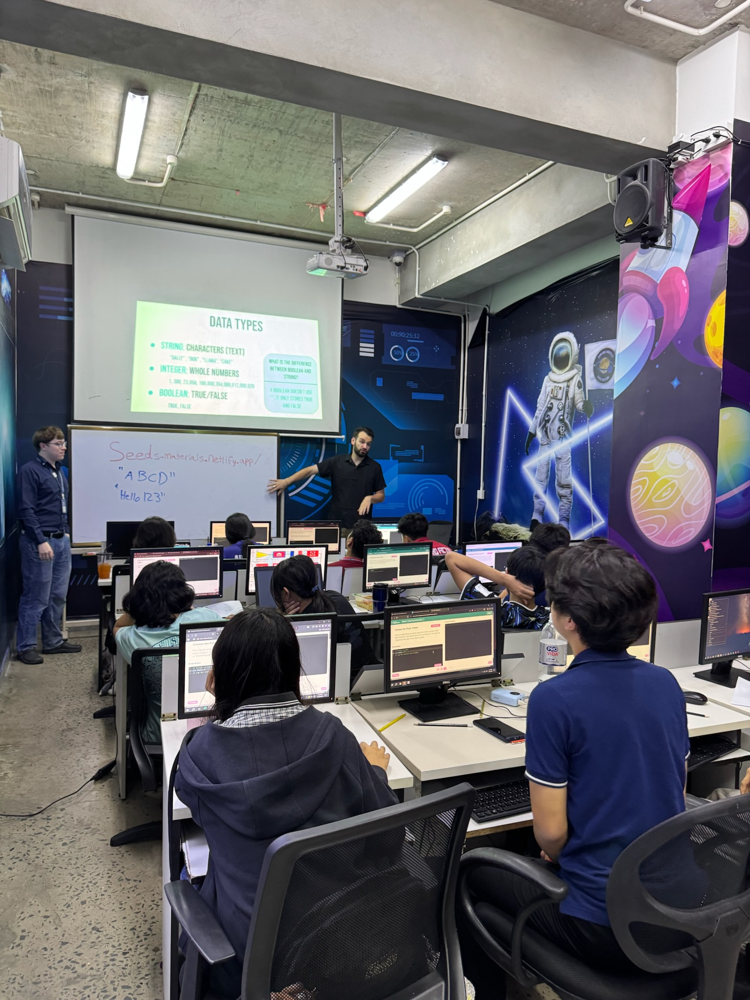
Floating Villages Outreach
Our team delivered groceries, tarps, and water filters directly to homes in the floating villages, helping families access shelter, clean drinking water, and daily essentials.
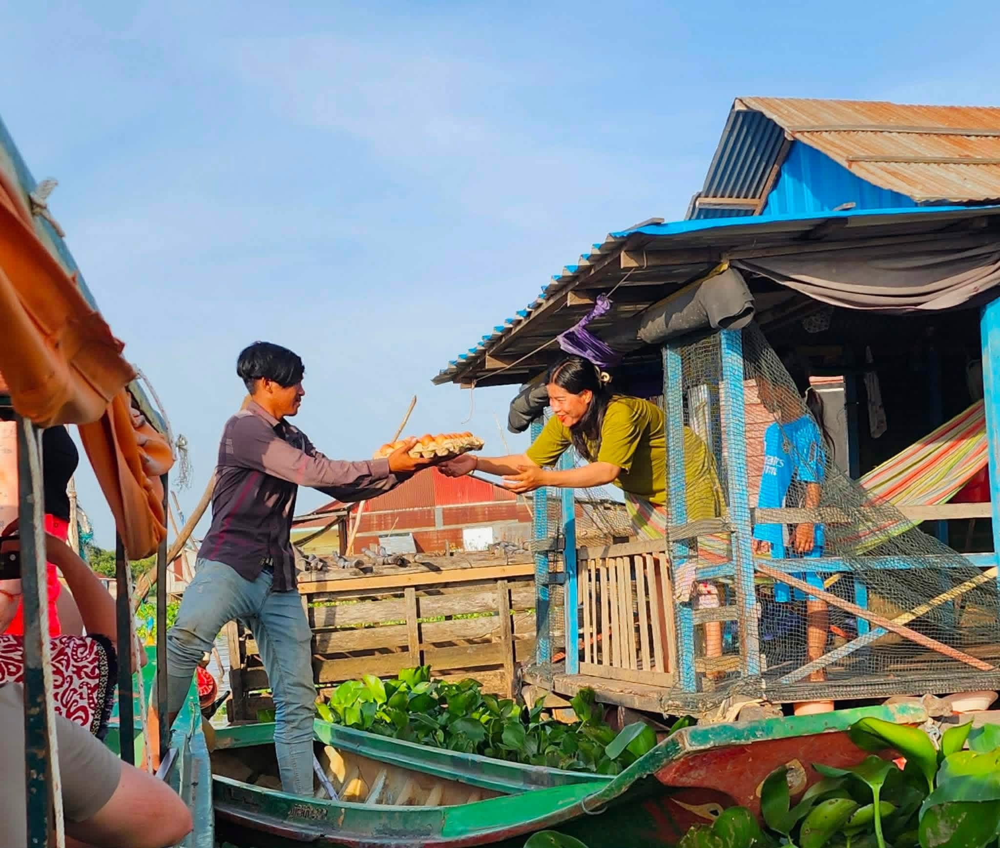
Teaching English & School Supplies at a Rural School
We spent a day at a rural school teaching English and handing out school supplies, working directly with students in the classroom alongside local teachers.
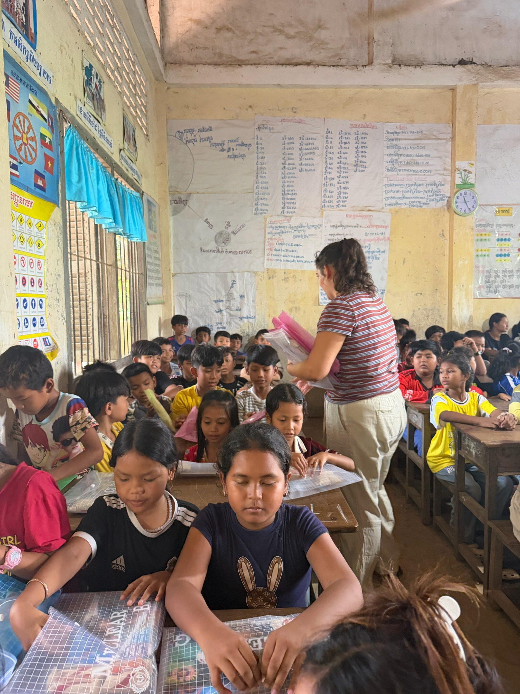
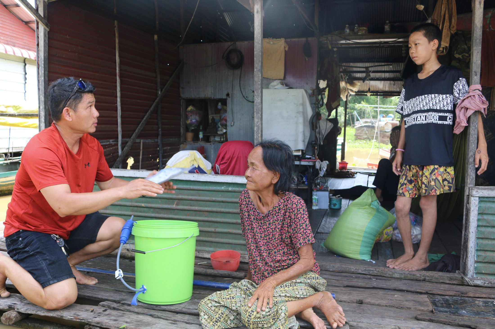
Opportunity shouldn't depend on where you're born
Just like at home, our goal abroad is the same: transform lives through education and meet essential needs where they're greatest. Pairing hands-on learning — like our coding camp and English instruction — with practical support like water filters and supplies lets us meet a community's needs on every level, not just the ones we're most comfortable with.
The volunteers who made the trip happen
Between camp, the floating villages, and the rural school, the team also took a day to see Angkor Wat together.
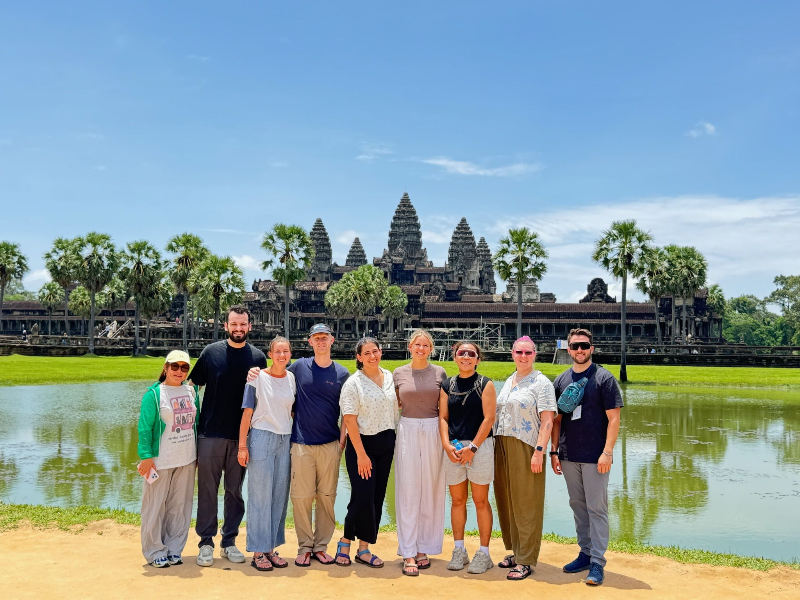
Moments from the trip
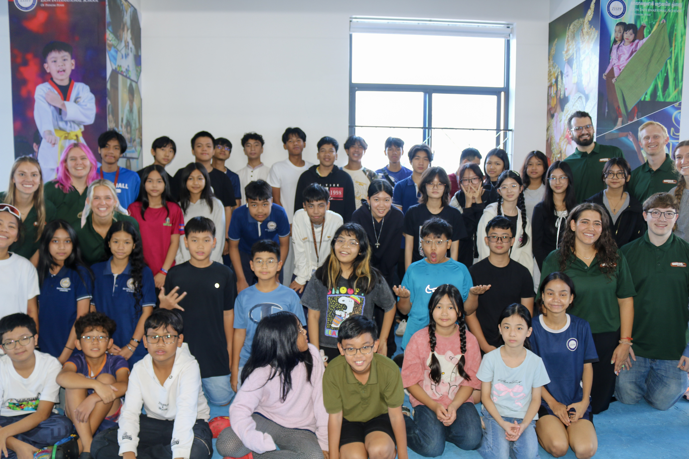
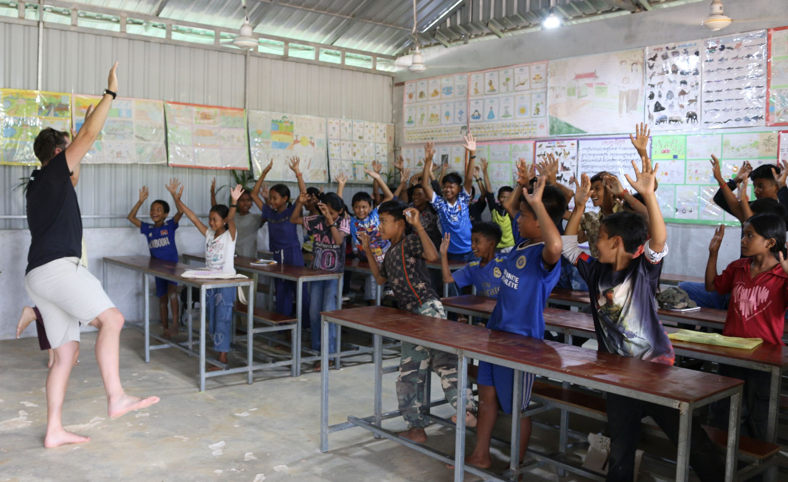
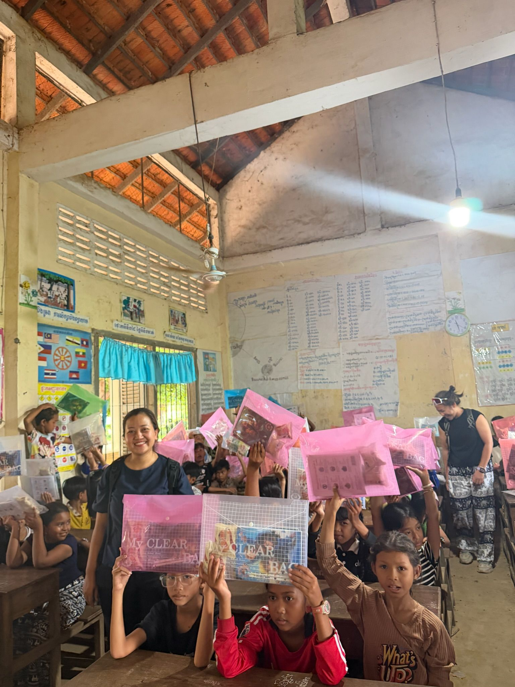
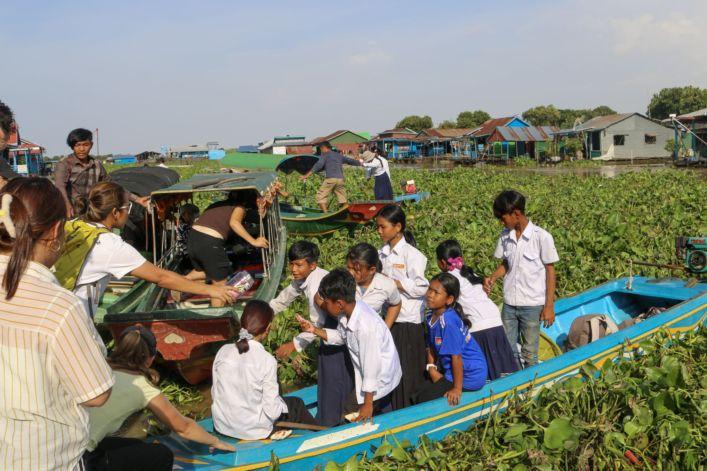
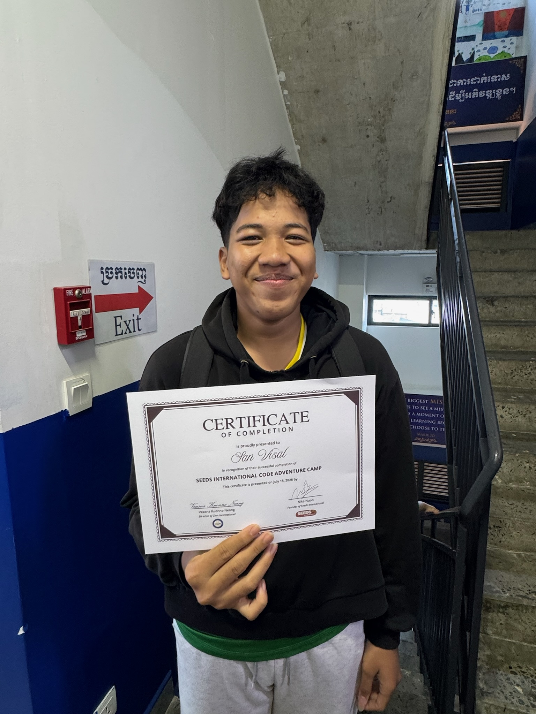
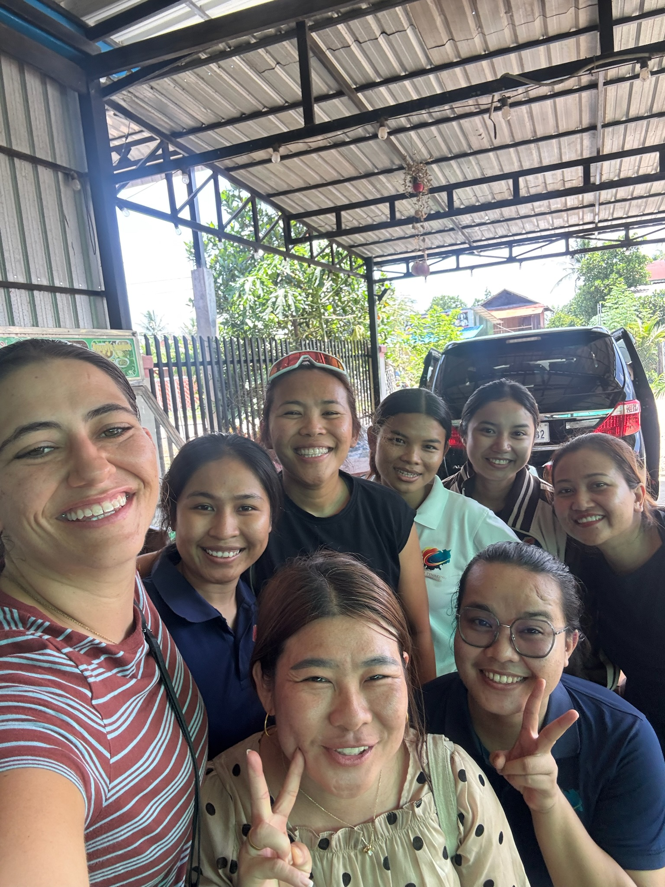
Help us reach the next community.
Support future trips, volunteer to travel with us, or connect us with an organization to partner with.